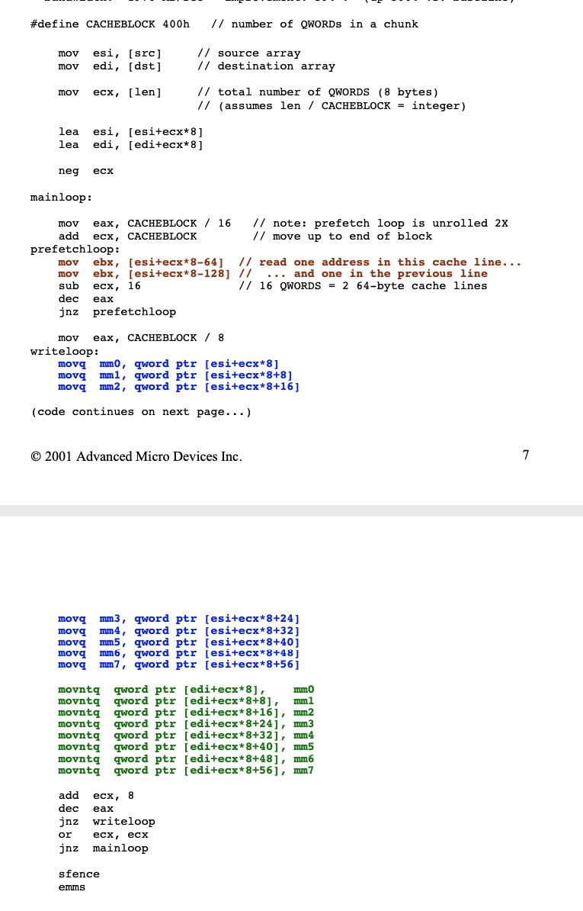

Using Block Prefetch for Optimized Memory Performance
AMD_block_prefetch_paper.pdf 这篇文章比较早，2001年AMD公司写的。里面使用了两个例子来说明如何有效地进行block prefetch来优化内存性能。一个例子是memcpy, 另外一个则是将两个浮点数组相加，这里面就只说第一个例子。
memcpy是个比较经典的例子，文章中也列举出来了各种方法来进行加速，大部分方法也是广为人知。这里我想摘抄一下里面是如何做block prefetch的。最开始他们使用的指令是 "prefetchnta"，这个指令对于CPU来说只是一个hint, 在执行的时候其实完全可以忽略的。为了"真实”地进行block prefetch, 我们可以使用mov指令。
Significantly, the MOV instruction is used, rather than the software prefetch instruction. Unlike a prefetch instruction, which is officially only a “hint” to the processor, a MOV instruction cannot be ignored and must be executed in-order. The result is that the memory system reads sequential, back-to-back address blocks, which yields the fastest memory read bandwidth.

这里一个CACHEBLOCK是L2 Cache大小。大致意思就是，在真正地去读src内容之前，先对一个cache block的内容进行“真正”地prefetch, 我们只取每个cache line上的头4字节，这样CPU会将对应的这条cache line也放入进来。注意这里要求src地址必须是和64字节对齐的，否则就没有这个效果了。另外注意在写入到dst的时候，使用的是movntq是不会涉及到cache line的，最后需要做一下sfence（因为我们使用了ntq这样的指令）。
还有一个小点需要注意，这里prefetch的顺序是逆序的。如果按照顺序进行加载的话，CPU可能会触发不必要的读请求。
One additional trick is to read the cache lines in descending address order, rather than ascending order. This can improve performance a bit, by keeping the processor’s hardware prefetcher from issuing any redundant read requests.
文章最后给了一些老生常谈的优化建议：
Block prefetch and three phase processing are general techniques for improving the performance of memory-intensive applications on PCs. In a nutshell, the key points are:
#1 To get the maximum memory read bandwidth, read data into the cache in large blocks (e.g. 1K to 8K bytes), using block prefetch. When creating a block prefetch loop:
- unroll the loop by at least 2X
- use the MOV instruction (not the Prefetch instruction)
- read only one address per cache line
- read data into an ALU scratch register, like EAX
- read only one linear stream per loop
- to prefetch several streams, use a separate loop for each – read cache lines in descending address order
- make sure all data is aligned
#2 To get maximum memory write bandwidth, write data from the cache to main memory in large blocks, using streaming store instructions. When creating a memory write loop:
- use the MMX registers to pass the data – read from cache
- use MOVNTQ for writing to memory
- make sure the data is aligned
- write every address, in ascending order, without any gaps – end with an SFENCE to flush the write buffer
#3 Whenever possible, code that actually “does the real work” should be reading its data from cache, and writing its output to an in-cache buffer. To enable this to happen, use #1 and #2 above.
还有就是hot-path循环指令最好是和64字节对齐（文章里面写的是16字节，但是我觉得应该是64字节）
Aligning “hot” branch targets to 16 byte boundaries can improve speed, by maximizing the number of instruction fills into the instruction-byte queue. This is especially important for short loops, like a block prefetch loop. This wasn’t shown in the code examples, for the sake of readability. It can be done with the ALIGN pragma, like this:
align 16 prefetchloop: mov ebx, [esi+ecx*8-64] mov ebx, [esi+ecx*8-128] sub ecx, 16 dec eax jnz prefetchloop